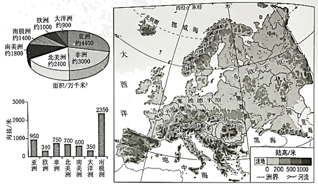
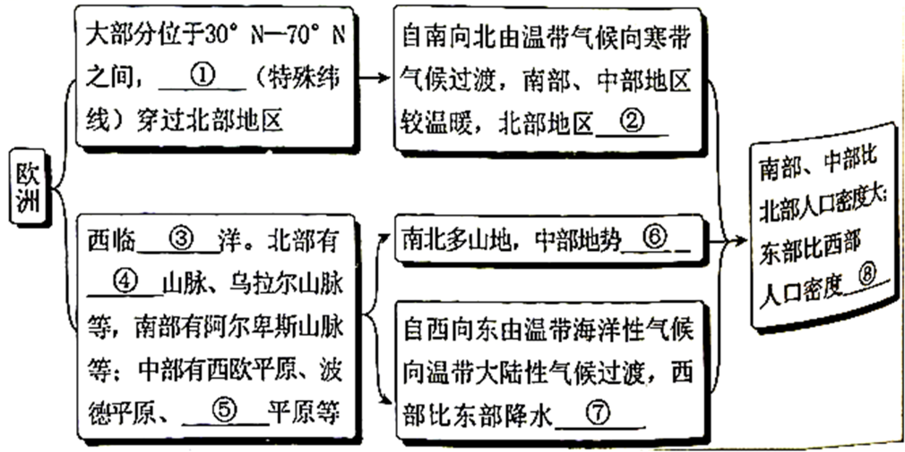

2023年北京中考地理 第28题
28. 通过区域比较和区域分析可以认识区城整体特征和内部差异。左图为世界七大洲面积及平均海拔统计图，右图为欧洲地形图。阅读图文资料，回答下列问题。

（1）七大洲中，欧洲面积居第____位，平均海拔最____；欧洲是工业革命的发源地，经济发展水平____，是世界人口稠密区。
（2）自然环境对人口分布有重要影响，通过分析欧洲的自然环境，认识其人口分布的差异。完成下列框图。

① _________； ②_________；③_________；④_________；
⑤_________；⑥_________；⑦_________；⑧_________。